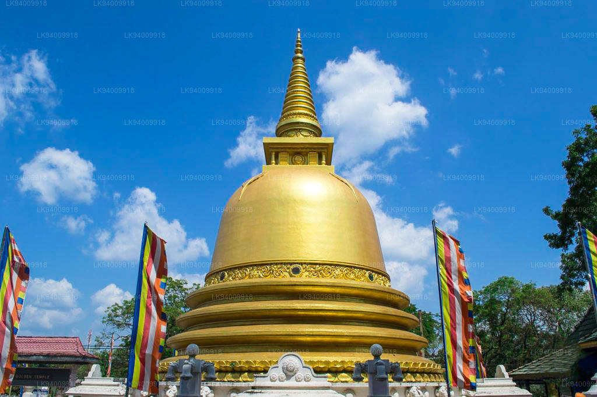
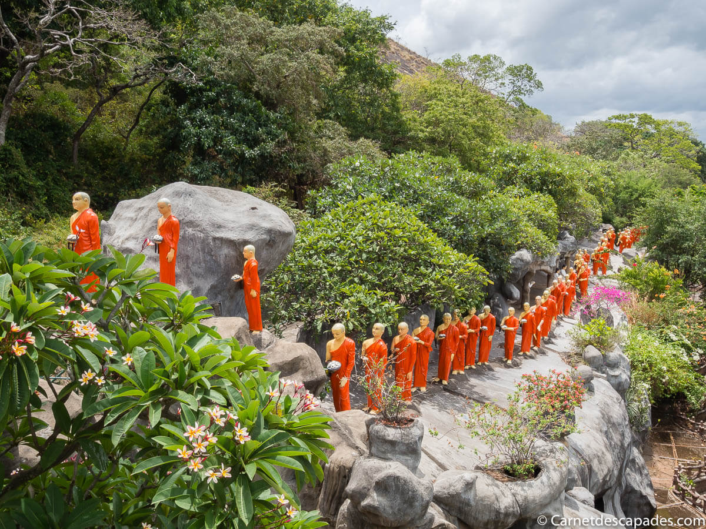
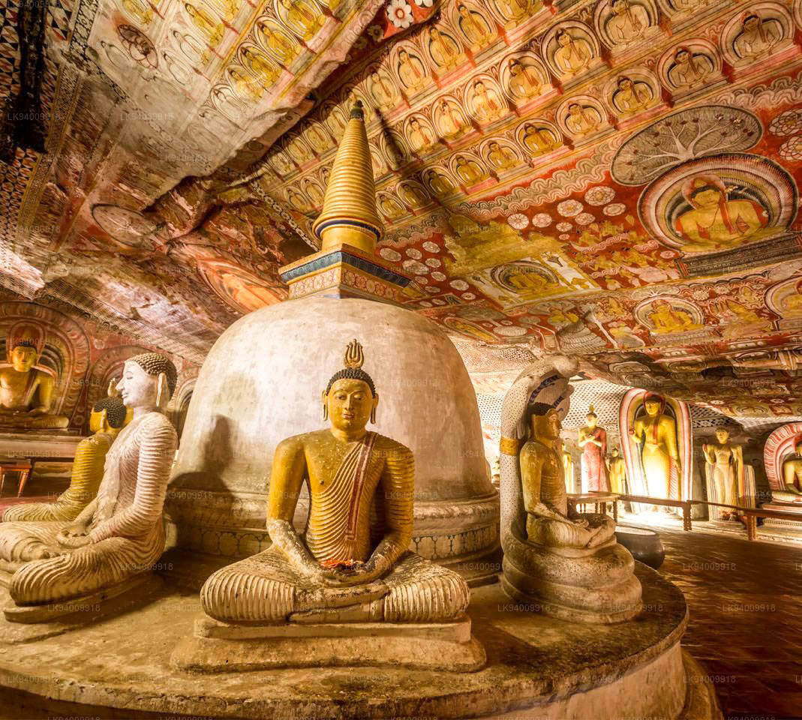

Home Wild life attractions Beaches Activities Heritage locations Hotel details Shop
...Heritage Locations In SriLanka...
...1.Golden Temple Dambulla...
. Dambulla cave temple, also known as the Golden Temple of Dambulla, is a World Heritage Site in Sri Lanka's central region. This location is 148 km east of Colombo, 72 km north of Kandy, and 43 km north of Matale.
...HISTORY...
 
. In the first century BCE, this temple complex was built. It has five caves carved into a massive overhanging rock that are kept dry by a drip line. In 1938, arched colonnades and gabled entrances were added to the architecture. The cave ceilings are intricately painted with religious images that follow the contours of the rock. Images of the Lord Buddha, bodhisattvas, and other gods and goddesses can be found.
...THE FIVE CAVES...
. The temple consists of five caves varying in size and splendor. The caves, which were built at the base of a 150-meter-high rock during the Anuradhapura and Polonnaruwa periods, are by far the most impressive of Sri Lanka's cave temples. The gentle slope of Dambulla Rock provides a panoramic view of the surrounding flat lands, including the 19-kilometer-away rock fortress Sigiriya. At dusk, hundreds of swooping swallows flock to the cave entrance. This magnificent cave is 7m tall at its highest point, 52m long from east to west, and 23m long from the entrance to the back. Hindu deities, as well as the kings Valagamba and Nissankamalla, and Ananda, the Buddha's most devoted disciple, are among those depicted..
...1.Cave of the Divine King...
.The first cave is known as Devaraja lena, which translates as "Cave of the Divine King." A 1st-century Brahmi inscription above the entrance to the first cave recounts the monastery's founding.
...2.Cave of the Great Kings...

. In the second and largest cave, there are statues of the gods Saman and Vishnu, which pilgrims frequently decorate with garlands, as well as statues of King Vattagamani Abhaya, who honored the monastery in the first century BC, and King Nissanka Malla, who was responsible for the gilding of 50 statues in the 12th century, as indicated by a stone inscription near the monastery entrance. As a result, this cave is known as Maharaja lena, or "Cave of the Great Kings." On the left side of the room, a rock-carved Buddha statue is accompanied by wooden figures of the Bodhisattvas Maitreya and Avalokiteshvara or Natha. A dagoba and a spring that drips water are also present.